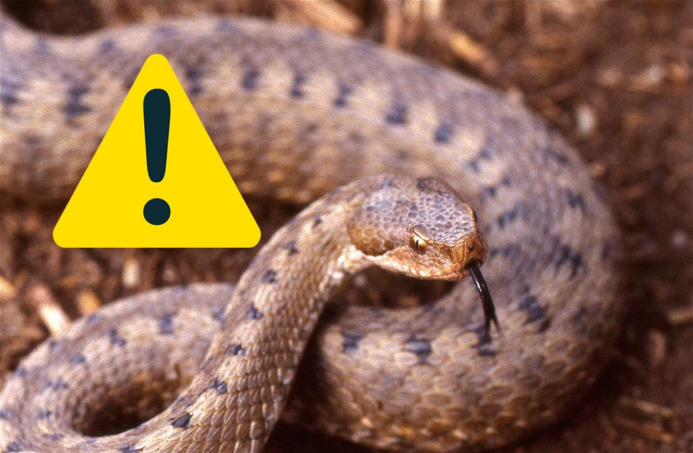

ESPECIES VENENOSAS
Estas especies tienen veneno en sus colmillos lo cual le ayuda a inmovilizar a su presa y como autodefensa.
• Echis carinatus (Víbora gariba)
• Bitis arietans (Víbora sopladora)
• Naja melanoleuca (Cobra de bosque)
• Serpiente de coral
• Bungarus fasciatus (Krait rayado)
• Crotalus ravus (Serpiente de cascabel)
• Naja philippinesis (Cobra filipina)
